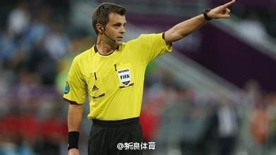

中国的产品宣传中，写上“国外进口”，这就暗示是高品质的；日本和德国的产品宣传中，写上“国内制造”，这就暗示是高品质的；美国的产品宣传中，写着“Made in Germany”的，那就是高品质的，写着"Made in China"的就是便宜的。各国都非常一致，看来真不是崇洋媚外与否的问题，是产品本身的问题……
美国人喜欢的三大职业体育（美式橄榄球、棒球、篮球）有个共同特点，就是都是美国人发明的！封闭保守可见一斑。 //@王风风风9: 北大第一才女出手，非同凡响。您真是文人中的翘楚。---:该账号因被投诉违反《微博社区公约》的相关规定，现已无法查看。查看帮助 网页链接
欧洲的四星意大利的裁判，执法一场同在欧洲的三星德国和南美的两星阿根廷的比赛，地点是五星巴西。德国和阿根廷球迷里的阴谋论者，哪个对这个安排更不高兴？@新浪体育:国际足联已对外宣布，意大利人里佐利将执法本次世界杯决赛，这是意大利裁判第三次担任世界杯决赛的主裁，有意思的是前两次意大利人担任决赛主裁后，意大利都在四年后的世界杯中夺冠——此前贡内拉和科里纳分别执法了1978年阿根廷与荷兰及2002年德国与巴西之间进行的决赛。 
 美国人如何治理腐败？
美国人如何治理腐败？